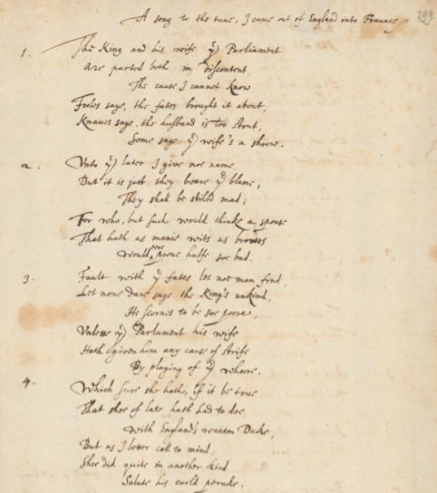
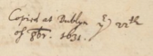

ROYAL FAVOURITE, SWISS THEOLOGIAN


In the late autumn of 1631, 25-year-old Johann Jacob Frey from Basel produced a quite extraordinary manuscript in his best handwriting. He was living at Dublin Castle with the family of the "Great Earl of Cork" Richard Boyle as the tutor of Boyle's eldest son, whose education he had been supervising since 1629. Frey had accompanied Richard junior to Oxford, where he himself took an MA in theology. Ordained in London as well as in Basel, Frey was a promising scholar and a conscientious tutor, who got on very well indeed with his teenage charge and had the father's complete trust.
And then, on "the 22nd of 8br 1631", this sober and pious young man neatly copied out all the 21 stanzas of one of the most scurrilous "Stuart Libels"! These political lyrics to popular tunes denounced and satirized perceived scandals and abuses at the English court of the 1620s in aggressive, often sexually charged invective. Frey's choice, "The King and his Wife the Parliament", notes that Parliament, the king's "wife", "ne're turnd up her tayle, / to him unles to kisse" and "play[ed] the whore […] with Englands wanton Duke". The "wanton duke" is George Villiers, first duke of Buckingham – the notorious favourite of both King James I and his son Charles I – who the song will not "curse" because the French "Pox" (i.e. syphilis) will undo him anyway. What could have impelled a Swiss clergyman to engage with this kind of text, three years after Buckingham's assassination?
The ways in which Buckingham and other nobles from the song crossed Frey's path in real life makes this question only more puzzling. In one of the first letters Frey wrote from England, just three weeks (!) after setting out from Paris, he was already able to report: "Yesterday I saw the King dine, with his favourite Buckingham standing by him, about whom I hear more than I dare put in a letter."[1] Four months later, Frey mentions Buckingham's military expedition to the French island of Ré, and a third letter from July 1629 confirms Frey's remarkable interest in the court of Charles I. After two years at Oxford, he informed his former teacher Wolfgang Meyer in excellent English that "my Lord Tresurer Weston is the chiefest man in State businesse, and the rest of the Courtiours, my Lord of Carlisle, my Lord of Holland, my Lord Goring, my Lord of Pembrocke are alike in the kings favour."
Along with the King and Buckingham, two of the courtiers that Frey observed are also attacked in "The King and his Wife, the Parliament" for their association with the duke. The notoriously spendthrift James Hay, Earl of Carlisle, is called "a man whose fortunes droopt / the brave Carlelian Earle", and Henry Rich, Earl of Holland, appears as "the effiminate Holland Count, vile worme". Six years later, when Frey was unwillingly back in Basel and networking hard to establish an ecclesiastical career in Britain, these two men reappear in his correspondence. Frey's friend James Zouche casually mentions Rich to Frey, and a letter by Frey includes the Earl of Carlisle in a list of sponsors which sounds like the cast list of a Shakespearean history play: "my lords of Pembroke,[2] Carlile, Goring, Salisbury, Northumberland, all" had supported him "infinitely beyond any deserts".
We do not know how Frey became the protégé of these men (apart from George Goring, who had married a sister of Frey's pupil), top-tier aristocrats who he had observed as influential in 1629, and seen lampooned in "The King and his Wife the Parliament". He must have acquired a remarkable degree of courtly polish besides his intellectual gifts and proven pedagogical talents. The latter eventually brought even Buckingham, the main target of most "Stuart libels", back into Frey's life, after a fashion. In 1635, Buckingham's widow and the Lord Chamberlain decided that Frey should "undertake the charge of the young Duke", George Villiers' now fatherless elder son. Sir William Becher, charged with conveying the job offer to Frey, urged "the importance of this imployment", the excellent conditions and the "singular love and care" which the king had for the seven-year-old Duke. However, Frey prevaricated for months, having been promised the more congenial position of Dean of Armagh by the Irish archbishop James Ussher.
Becher's final letter to Frey insists that "both my Lord Chamberlain and my Lady Dutchesse doe continue very desirous, that you should undertake the charge of the young Duke". But Becher also states a condition: the Duchess "would desire you to forbeare to take Ecclesiastical orders upon you, during the time you shall remayn with her sonne." This gave Frey a "reall excuse" to finally decline the glamorous offer, explaining that he was "soe farre entred into Ecclesiastique Orders, that I feare my service would not soe well be accepted of". If we believe a hint to a friend who Frey he had no reason to lie to, there had even been talk of the one even more high-ranking tutor's job available in Britain: "some of my noble friends [were] willing to have me raise the young Prince", the future Charles II. Frey had only a year to live when he wrote this, so his courtly and ecclesiastical career in Britain are both counterfactuals. But maybe he was taking good note of an environment to avoid when he copied out "The King and his Wife the Parliament".
Regula Hohl Trillini1 "Regem heri vidi coenantem adstante Dilecto eius Bucquingamo, de quo plura audio quam vero audeo litteris committere." (Letter to Wolfgang Meyer, 30 April 1627. Bibliothèque Nationale et Universitaire de Strasbourg. JOFRES-CPAT MS.0.333, fol. 245). ↩
2 This Pembroke is Philip, the younger brother of William, who had died in 1630. Philip Herbert, Lord Chamberlain since 1626, had developed "an exceeding good opinion and esteeme" of Frey (William Becher. "Letter to Johann Jacob Frey, 14 August 1635." University Library of Basel. UBH Frey-Gryn Mscr I 23, fol. 14-14a). ↩